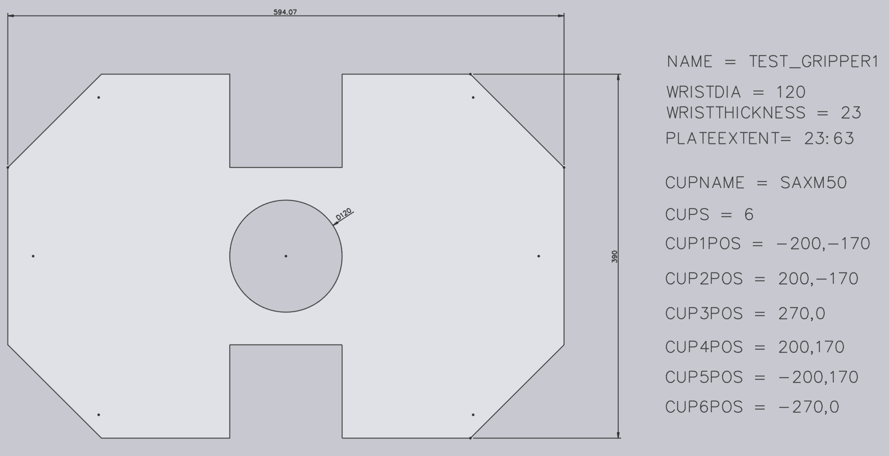
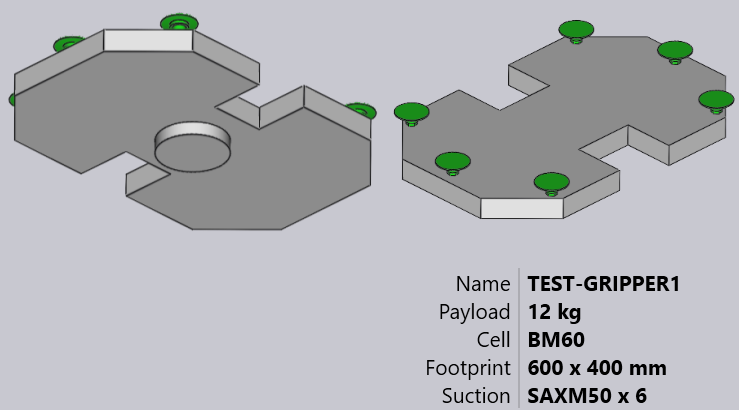

Greifer aus DXF importieren
Ein Vakuumsauggreifer für die BendMaster-Maschinen kann aus einer DXF-Datei importiert werden. Die DXF-Datei stellt die obere Ansicht des Greifers dar (obere Ansicht bedeutet von den Saugnäpfen, NICHT vom BendMaster). POLYLINE-Entitäten in der DXF-Datei liefern die Form der Greiferplatte und TEXT-Entitäten liefern zusätzliche Informationen über den Greifer (wie seinen Namen, Dicke und Saugnapfplatzierung).
Dateien im erforderlichen Format (DXF, ARV oder GEO) können in die Biegedatenbank importiert werden.
So importieren Sie einen Greifer:
-
Öffnen Sie die Datenbank in TecZone Bend.
-
Wählen Sie die Option Biegegreifer aus der Liste.
-
Klicken Sie auf die Option Importieren… und wählen Sie einen Greifer als DXF-Datei aus dem Verzeichnis aus.

So sieht dieser Greifer nach dem Import aus (in zwei Ansichten von unten und oben gezeigt).


Einfacher Greifer
Sehen Sie die unten gezeigte einfache Zeichnung, die einen Greifer definiert und als DXF-Datei gespeichert werden kann, um sie wieder in die Greiferbestandsliste zu importieren.

Hier sind einige wichtige Punkte, wie die DXF gezeichnet wird:
-
Der Ursprung der Zeichnung (0,0) entspricht der Mitte des Roboterhandgelenks. Sie können dies durch einen Punkt und einen Kreis in der Abbildung dargestellt sehen. (Sowohl der Punkt als auch der Kreis werden für den Greiferimport nicht wirklich benötigt, da die Greifermitte implizit immer am Ursprung liegt).
-
Diese Zeichnung enthält auch einige POINT-Entitäten, die jede der Saugnapf positionen darstellen. Auch diese dienen hauptsächlich dazu, die Zeichnung klarer zu machen und werden nicht wirklich vom Greiferimporter verwendet (die Saugnapfpositionen werden durch Textentitäten angegeben).
-
Die tatsächliche Plattenform wird als geschlossene POLYLINE-Entitäten gezeichnet. Wenn Sie andere Polylinien innerhalb der äußeren haben, werden sie zu Löchern in der Platte.

Zweilagiger Greifer
Etwas komplexere Greifer können mit einer separaten BASEPLATE-Ebene modelliert werden. Erstellen Sie eine Ebene mit dem Namen BASEPLATE in der DXF-Datei und zeichnen Sie einige geschlossene POLYLINE-Formen in dieser Ebene. Dann kann für diese Ebene separate Z-Extrusionsgrenzen angegeben werden, die durch den BASEPLATEEXTENT-Schlüssel spezifiziert sind. Die Werkzeuge zum Erstellen und Bearbeiten von Ebenen werden jetzt hinzugefügt.
-
Klicken Sie auf Verwandt, wenn eine Zeichnung bearbeitet wird.
-
Wählen Sie das Menü Ebenen, um neue Ebenen hinzuzufügen, sie umzubenennen, Farben festzulegen und Linienstile zu ändern.

-
In der Zeichnung können Sie durch Klicken auf eine Entität die Ebene dieser Entität ändern.

Die Ebene wird nur dann im Entitätsbereich angezeigt, wenn mehrere Ebenen in der Zeichnung vorhanden sind. -
Speichern Sie die Zeichnung nach der Bearbeitung mit diesen Werkzeugen im DXF-Format. Hier ist eine DXF, die mit einer solchen BASEPLATE-Ebene gezeichnet wurde (in der Abbildung grün dargestellt).

Bei diesem Greifer erstreckt sich das Handgelenk von Z=0 bis Z=23. Dann erstreckt sich die Grundplatte (grün) von Z=23 bis Z=40, wie durch den Schlüssel BASEPLATEEXTENT angegeben. Schließlich erstreckt sich die eigentliche Greiferplatte (mit den Saugnäpfen) von Z=40 bis Z=63, wie durch den Schlüssel PLATEEXTENT angegeben. Die Greiferplatte hat auch einige sechseckige Löcher. Beim Import sieht dieser Greifer wie das Bild unten aus:

Mehrlagiger Greifer
Mehrlagige Greifer sind eine aktualisierte Version des zweilagigen Greifers, bei dem mehr als zwei Ebenen erstellt und mit TecZone Bend importiert werden können. Um einen mehrlagigen Greifer zu verwenden, muss die DXF den Text VERSION = 2 enthalten. Ein Beispiel für einen mehrlagigen Greifer ist unten dargestellt:

Jede Ebene muss mit ihren Ausdehnungen definiert werden wie LAYER_1 = 23 : 35. Die Entitäten in dieser Ebene werden zu diesen Ausdehnungen hinzugefügt. Ebenso werden die Näpfe in der Form CupNo = X pos, Y pos, [Cup type, Mounting height, Cup group] definiert.
| X- und Y-Positionen sind obligatorisch. |
Verschiedene mögliche Definitionen für Saugnäpfe werden unten erklärt:
CupNo = X pos, Y pos mit dem Namen des Napfes, der in CUPNAME wie in der vorherigen Version angegeben ist
CupNo = X pos, Y pos, Cup type, wobei jeder Napftyp separat definiert wird (für ovale
Näpfe variieren die Namen mit dem Winkel)
CupNo = X pos, Y pos, Cup type, Mounting Height
CupNo = X pos, Y pos, Cup type, Mounting Height, Cup Group
CUP1 = 275, 314, SAOB60x30_90grad_ged, 72, 2
Wenn die Montagehöhe nicht angegeben ist, wird standardmäßig die maximale Plattenausdehnung berücksichtigt. Ebenso wird die Saugnapfgruppe auf 1 gesetzt, wenn sie nicht definiert ist.
| Derzeit unterstützt TecZone Bend keine unterschiedlichen Montagehöhen für die Saugnäpfe. |
Beim Import sieht ein Beispielgreifer wie das Bild unten aus:


Mehrkreis-Greifer
Sie können einen Mehrkreis-Greifer erstellen (ein Greifer, der mehrere unabhängige Vakuum kreise hat). Für einen solchen Greifer wird jeder Saugnapf einer nicht-null Gruppennummer zugewiesen.
Weisen Sie Sauggruppen mit einem speziellen Format für CUP1POS, CUP2POS usw. zu, wie unten gezeigt:
CUP1POS = 340,120 #6
CUP2POS = 420,140 #8
Der Wert nach dem # ist die Sauggruppennummer für den Napf. In diesem Beispiel ist Napf 1 der Sauggruppe 6 zugewiesen, Napf 2 ist der Sauggruppe 8 zugewiesen und so weiter.
Damit ein Mehrkreis-Greifer korrekt konfiguriert ist, muss jedem Napf eine Sauggruppennummer auf diese Weise zugewiesen werden.
| Die maximale Anzahl von Saugnäpfen, die in einem Greifer verwendet werden können, ist auf 100 begrenzt. Wenn Sie einen Greifer mit mehr als 100 Saugnäpfen importieren, zeigt TecZone eine Fehlermeldung beim Import an. |
Das Bild unten zeigt einige Beispielgreifer in der Biegedatenbank Biegegreifer.